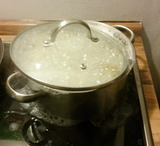
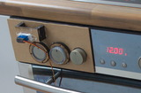
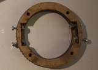
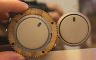
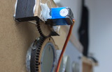
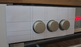
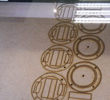

|

Fig.1: The Problem

Fig.3: The Solution

Fig.4: Gripper for round stove nobs

Fig.5: Gripper actually fits

Fig.6: Servo Motor control

Fig.7: Prototyping

Fig.8: Lasercutting
|
Automated Stove Control
Course work submission for the 2016 "Do it yourself" (DIY) lecture at the University of Erlangen-Nürnberg
|
|
|
|
What?
|
|
Cooking can be a real hassle at times. Especially, when one has a manually controlled stove (Fig.1). It is very difficult to keep an eye on the clock, while stiring. It is even more difficult to adjust the stove spot on time, before risking to overcook. Overcooking can not only result in indigestable food, but also in home fires. Kitchen accidents account for 45% of home fires [1]. Meanwhile, society has reached the 21st century. Experts say the next industrial revolution is a more tighly connected network of devices. Predictions state that the Internet of Things and Industry 4.0 are just around the corner.
Therefore, we propose the next logical step: bring the revolution to the kitchen! We start by automating the stove.
|
|
|
|
When?
|
|
This description is part of my project for the DIY course at university. We were given freedom to design anything. The primary objective was to design something we feel could be useful and didn't exist so far. Secondary objectives are to use machines available at the universities fabrication laboratory (FabLab). This may include 3D printers, laser cutters, PCB etching tools and CNC routers.
|
|
Why?
In all seriousnes: My stove is infact very difficult to handle. The thought of automating it has come to mind often. An issue, which kept me from doing this so far - apart from having little time next to my university studies -, has always been the difficulty of mounting a motor to the rotating nobs of the stove.
Background?
The possibility of using a laser cutter to acurately manufacture the necessary parts has made this project possible. The methods described make easy computer control a servo motor feasible (see below).
This leaves only one challenge: Writing flexible software control.
How?
The project consists of the following basic components:
- Mechanics, Gripper: Laser cut and glued fiberwood latches onto the nob of the stove (Fig.4,5). Small pieces cut from anti-slip mats, a screw and nut attach to the nob firmly. The Gripper also has lasercut gear wheel glued onto it. The Gripper has the dual purpose of holding the base plate onto the stove aswell.
- Mechanics, Base plate: The base plate was cut by hand using a scroll saw. One such plate slides over three of the nobs to the left and another such plate slides over the three nodes on the right. The purpose of this plate is to hold the motors and direct the rotary forces onto the nobs instead letting the motors turn themselves.
- Electornics, Motors: The used are 360 Degree free-spinning Servos (Fig.6). Pulse-width modulating such motors means controlling how far the motor turns, not to which angle (as with non-free-spinning Servos). This makes a light barrier necessary in order to home the nob, bevor the stove can be operated autonomously.
- Electornics, Motor control: Motor control is very similar to an earlier project. (see here for details on I2C and FTDI FT232RL bit-bang-mode). A 16-channel I2C controlled PCA9685 PWM driver controls the servo motors directly and receives commands from an FTDI FT232RL, which is operated from in bit-bang mode.
- Software: The software is written entirly in Python. This eases development as it can be written and tested on a laptop computer and later moved to an embedded computer. Control is achieved by either directly using the web-interface or other software which submites requests to it.
Progress?
As of now the first designs are completed (Fig.7) and the first parts have been laser cut (Fig.8). Motorized control of a nob is possible (see video). The next step is to cut identical parts for the rest of the nobs and attach additional motors in the same fashsion.
Future plans
- Scripting: in order to create reproducable, automated, cooking roadmaps. Such scripts may consist of wait-Commands, Motor-Commands and Conditional statements depending on sensor values.
- Sensors: such as temperature sensors, which can be dropped into the pots. This, in combination with scripting, will enable adjusting the stove depending on the water temperature within the pot.
- Actuators: such as servo controlled mounts to automatically flip beakers, for automatically adding ingredients. This should be freely arrangable in order to cook with multiple pots and pans.
- Stiring device: is a necessity for fully automated cooking
The first tests have been a success. It is therefore undoubtedly feasible to implement these future plans. Volunteers?
[1] http://www.nfpa.org/research/reports-and-statistics/fire-causes/appliances-and-equipment/cooking-equipment
|